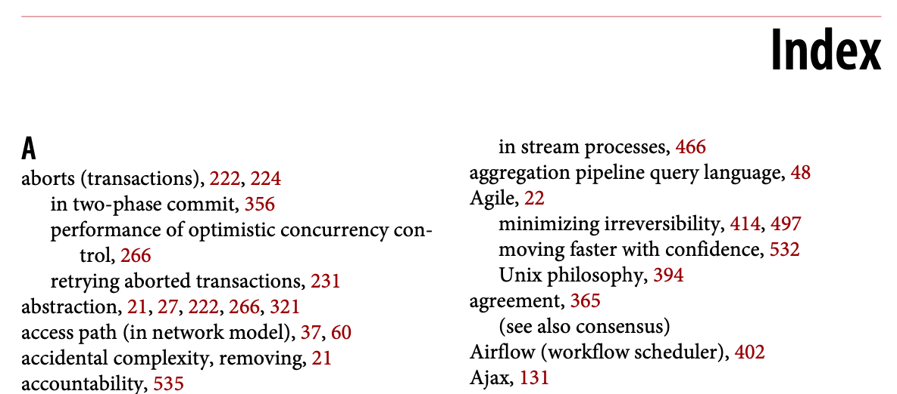
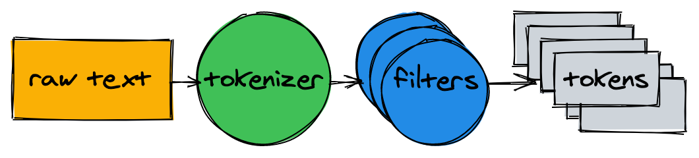
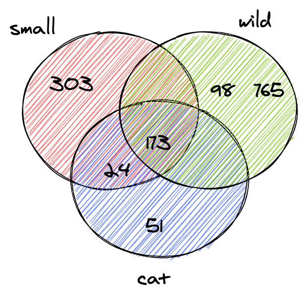

全文检索是我们每天都使用的工具之一，在谷歌上搜索「golang 入门」或在淘宝上搜「智能音箱」，就会用到全文检索技术。
全文检索（FTS full text search）是一种在文档集合中搜索文本的技术。文档可以指网页、报纸上的文章、电子邮件或任何结构化文本。
今天我们将建立我们自己的 FTS 引擎。在这篇文章结束时，我们将实现一个能够在一毫秒内搜索数以百万计的文档的程序。我们从简单的搜索查询开始，比如：找出所有包含「cat」这个词的文档，然后我们将扩展这个引擎以支持更复杂的布尔查询。
注：目前最著名的 FTS 引擎是 Lucene（以及建立在它之上的 Elasticsearch 和 Solr）。
为什么是FTS
在我们开始写代码之前，你可能会问：「我们就不能用 grep 或者用一个循环来检查每个文档是否包含我所要找的词吗？」。
是的，可以这样做。但这并不是最好的解决方案。
语料库
我们将搜索英文维基百科的一部分摘要。最新的离线数据可以在 dumps.wikimedia.org 上找到。压缩包解压后的 XML 文件为 956MB（截止2021年05月17日），包含60多万个文档。
文档的例子：
1 | <title>Wikipedia: Kit-Cat Klock</title> |
加载文件
首先，我们需要加载所有文件，这一步使用内置的 encoding/xml 包就就够了。
1 | import ( |
每个被加载的文档都被分配了一个唯一 ID。简单起见，第一个文档的 ID=0，第二个 ID=1，以此类推。
第一次尝试
搜索内容
现在我们已经把所有的文档都加载到了内存中了，我们可以试着找到所有关于 cat 的文档。
首先，让我们循环遍历所有的文档，检查它们是否包含 cat 这个子串。
1 | func search(docs []document, term string) []document { |
在我的 Macbook Pro 上，搜索阶段耗时 68ms，还不错。
我们抽查结果中的几个文件，会发现这个函数匹配了 caterpillar（毛毛虫）和 category，但没有匹配大写字母 C 开头的 Cat，这不太符合我们的预期。
在继续前进之前，我们需要解决两件事：
使搜索不区分大小写（Cat 要匹配）。
在单词边界而不是在子字符串上匹配（caterpillar 和 category 不匹配）。
用正则表达式进行搜索
一种可以快速想到并实现这两个要求的方案是使用正则表达式。
在这里为 (?i)\bcat\b。
(?i)使正则表达式不区分大小写\b匹配一个词的边界。
1 | func search(docs []document, term string) []document { |
这次搜索花了近 2 秒。正如我们所看到的，即使只有 60 万个文档，搜索也开始变得缓慢。虽然这种方法很容易实现，但它不能很好地扩展。随着数据集的增大，我们需要扫描的文档越来越多。这种算法的时间复杂度是线性的——需要扫描的文档数量等于文档总数。如果我们有 600 多万个文档，搜索将需要 20 秒。
倒排索引
为了使搜索查询更快，我们要对文本进行预处理，并提前建立一个索引。
FTS 的核心是一个叫做倒排索引的数据结构，倒排索引将文档中的每个单词与包含该单词的文档关联起来。
例子:
1 | documents = { |
下面是倒排索引的现实世界的例子：一本书中的索引，其中每个术语都引用了一个页码。

文本解析
在我们开始建立索引之前，我们需要将原始文本分解成适合索引和搜索的单词（tokens）列表。
文本解析器由一个分词器和多个过滤器组成。

分词器（tokenizer）
分词是文本解析的第一步，它的工作是将文本转换成一个单词列表。我们本次的实现是在一个词的边界上分割文本，并删除标点符号。
1 | func tokenize(text string) []string { |
1 | > tokenize("A donut on a glass plate. Only the donuts.") |
过滤器
大部数情况下，仅仅将文本转换为一个单词列表是不够的。为了使文本更容易被索引和搜索，我们还需要做额外的规范化处理。
小写字母
为了使搜索不区分大小写，小写过滤器将单词转换为小写。cAt、Cat 和 caT 被归一化为 cat。之后在我们查询索引时，也会将搜索词进行小写处理。这样就可以让搜索词 cAt 与文本 Cat 相匹配了。
1 | func lowercaseFilter(tokens []string) []string { |
1 | > lowercaseFilter([]string{"A", "donut", "on", "a", "glass", "plate", "Only", "the", "donuts"}) |
排除常用词
几乎所有英语文本都包含常用的单词，如 a、I、the 或 be。这样的词被称为停词，我们要将它们删掉，因为几乎任何文档都会与这些停顿词相匹配。
没有「官方」的停词表，这里我们把 OEC 排名的前10的词进行排除。
1 | var stopwords = map[string]struct{}{ |
1 | > stopwordFilter([]string{"a", "donut", "on", "a", "glass", "plate", "only", "the", "donuts"}) |
词干化
由于语法规则的原因，文档中可能包括同一个词的不同形式。词干化将单词还原为其基本形式。例如，fishing、fished 和 fishe r可以被还原为基本形式（词干）fish。
实现词干化是一项很大的任务，在本文中不进行涉及。我们将采用现有的一个模块。
1 | import snowballeng "github.com/kljensen/snowball/english" |
1 | > stemmerFilter([]string{"donut", "on", "glass", "plate", "only", "donuts"}) |
注：词干并不总是一个有效的词。例如，有些词干器可能会将 airline 简化为 airlin。
将解析器组合在一起
1 | func analyze(text string) []string { |
分词器和过滤器将句子转换为一个单词列表：
1 | > analyze("A donut on a glass plate. Only the donuts.") |
这个列表已经做好了索引的主板内。
建立索引
回到倒排索引，它把文档中的每个词都映射到文档 ID 上。内置的 map 是存储该映射很好的选择。map 中的键为单词（字符串），值为文档 ID 的列表。
1 | type index map[string][]int |
建立索引的过程包括解析文档（调用前边的 analyze 函数）并将其 ID 添加到 map 中。
1 | func (idx index) add(docs []document) { |
map 中的每个单词都指向包含该单词的文档 ID。
1 | map[donut:[1 2] glass:[1] is:[2] on:[1] only:[1] plate:[1]] |
查询
为了对索引进行查询，我们对查询词使用与索引的相同分词器和过滤器：
1 | func (idx index) search(text string) [][]int { |
1 | > idx.search("Small wild cat") |
最后，我们可以找到所有提到 cat 的文件。搜索 60 多万个文档只花了不到一毫秒的时间。
有了倒排索引，搜索查询的时间复杂度与要搜索单词的数量成线性关系。在上面的例子中，解析完输入文本后，搜索只需要进行三次 map 查询。
布尔查询
上边的查询为每一个单词都返回了一个文档 ID 列表。当我们在搜索框中输入 small wild cat 时，我们通常期望找到的是一个同时包含 small、wild 和 cat 的结果列表。下一步是计算这些列表之间的集合交集，这样我们就可以得到一个与所有单词相匹配的文件列表。

我们的倒排索引中的 ID 是以升序插入的。由于 ID 是有序的，所以可以在线性时间内计算两个列表之间的交集。intersection 函数同时遍历两个列表，并收集同时存在于两个列表中的 ID。
1 | func intersection(a []int, b []int) []int { |
使用更新后的 search 方法解析给定的查询文本，查找单词并计算ID列表之间的集合交集：
1 | func (idx index) search(text string) []int { |
维基百科的离线数据中只有两个文档同时与 small、wild 和 cat 相匹配。
1 | > idx.search("Small wild cat") |
搜索到了我们所预期的结果！
总结
我们刚刚建立了一个全文检索引擎，尽管它很简单，但它可以成为更高级项目的基础。
我没有触及到太多可以显著提高性能和使引擎更友好的内容，下面是几个进一步改进的想法：
扩展布尔查询，支持 OR 和NOT
在磁盘上存储索引
- 在每次应用重启时重建索引可能需要一段时间
- 大型索引可能不适合放在内存中
尝试用内存和 CPU 高效的数据格式来存储文档 ID 集合
支持对多个文档字段进行索引
按相关性对结果进行排序